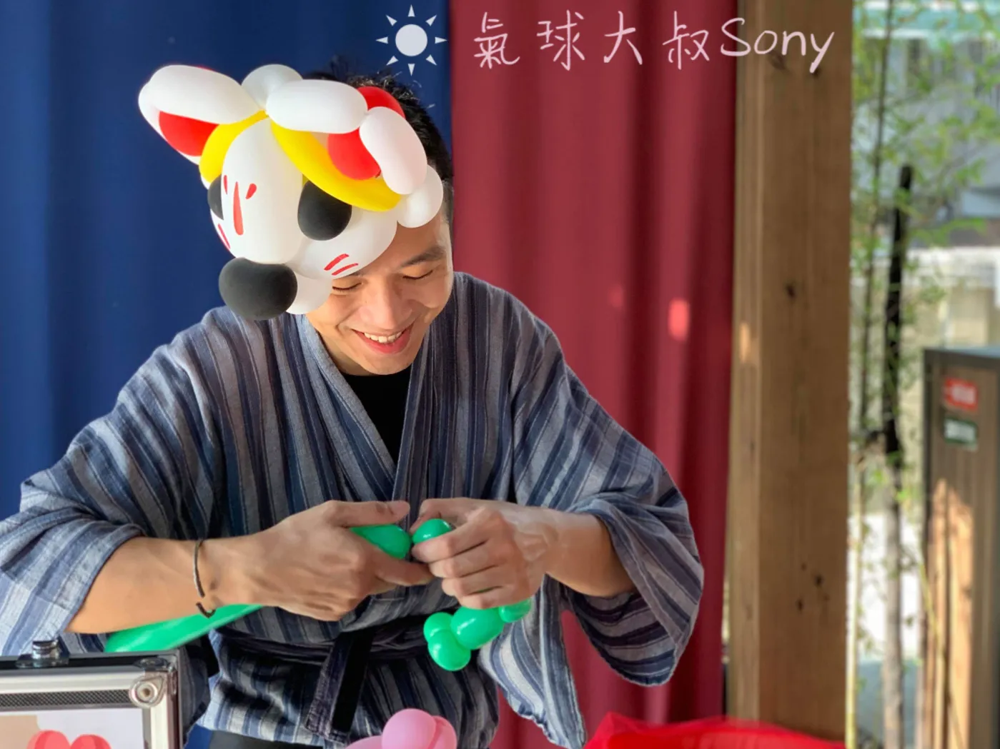

🎄 聖誕節社區表演｜氣球魔術 ＋ 聖誕主題手折
清單點選制．控場穩定．好收尾好清場
年末節慶想要溫馨又俐落？氣球大叔 Sony 以氣球魔術暖場帶出聖誕氛圍，再接續聖誕主題手折的「清單點選制」，孩子勾款式、家長好排隊，交付明確不混亂。服務涵蓋 基隆、台北、新北、桃園、新竹、苗栗、台中，適合社區聖誕晚會、園區點燈、市集舞台與公司家庭日。
12 月檔期易滿，建議先卡位再補細節；亦可客製「報佳音串場、聖誕老公公合照」等段落。
🎯 聖誕節三大重點服務
- 氣球魔術暖場（約 25–30 分鐘）：以節慶橋段開場（驚喜禮物箱、紅綠彩帶魔術等），笑點與參與感兼具。
- 聖誕主題手折（清單點選制）：麋鹿角、拐杖糖、聖誕樹、小雪人、紅綠劍、皇冠、耶誕帽等；可依人潮設計名額與換手率。
- 可加購段落：報佳音串場、Santa Photo Time 合照動線、壓軸禮物抽獎用大型氣球。
📍 七縣市服務建議
-
🎈 基隆市：防潮遮蔽＋合照動線
建議活動中心／騎樓；魔術後安排 Santa 合照區與手折區分流，避免交錯。
-
🎈 台北市：商場／社區點燈，小空間高效率
建議 25–30 分鐘魔術＋60–120 分鐘手折；搭配款式海報與號碼卡，換手率清楚。
-
🎈 新北市：量體大，名額公告與地貼排隊線
公告款式清單與名額上限；地貼標線＋領件窗口，單人作業也能順暢。
-
🎈 桃園市：親子動線清楚，產能穩
一小時流程：魔術 25–30 分鐘＋手折 60–120 分鐘；人多時可改單／雙色限定款式提速。
-
🎈 新竹市：風格講究，款式勾選單先行
提供聖誕款式清單（拐杖糖、麋鹿角、聖誕樹等），減少溝通時間，提升換手率。
-
🎈 苗栗縣：夜間廣場多，燈光與領件時間
晚場建議增設照明與取件時段公告，看得到、領得到、走得開。
 👉 苗栗表演服務頁 -
🎈 台中市：大型活動，分段或加時
採「兩段式流程（魔術→手折→休息→手折）」或預先協調加時；單人作業亦能維持品質與秩序。


🧭 動線與名額設計（聖誕版本）
- 入口處張貼 款式海報＋QR 勾選單，家長先選款式再入列。
- 以 號碼卡／分時領件 控制等待時間；合照區與手折區分流。
- 作品 展示區＋領件窗口 分開設置，避免回頭擁擠。
常見問題 FAQ（聖誕版）
Q：聖誕節流程如何規劃？
A：建議「魔術 25–30 分鐘 → 聖誕主題手折 60–120 分鐘」，視人數調整名額與分時領件。
Q：如何避免排隊混亂？
A：事前公告款式清單、名額與分時制度；現場使用號碼卡＋地貼排隊線，並設領件窗口。
Q：是否提供聖誕老公公合照？
A：可協助銜接第三方 Santa 進場與合照動線，或安排合照替代段落（如大型禮物氣球抽獎）。
Q：場地與音響需求？
A：平坦安全區域即可；可自備擴音與麥克風，110V 插座即可。
🎄 打造最吸睛的聖誕夢幻派對！
正在尋找最有聖誕氛圍的表演嗎？
氣球大叔提供「聖誕限定版」魔術與造型氣球，讓您的聖誕晚會充滿驚喜與歡笑！
🎅 溫馨提示：12 月聖誕熱門週末極易客滿，歡迎提前討論喔！